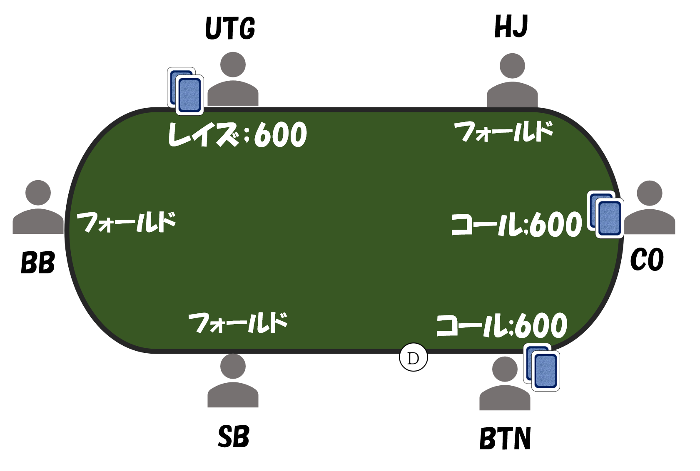

（例1） プリフロップ

上の例では、UTGはレイズ600で参加して、他の人はコールで参加しています。
UTGが最後にレイズしているため、UTGがアグレッサーです。
（例2） プリフロップ

上の例では、HJがレイズ600で参加して、COがレイズ1800に賭け金を上乗せし、HJがコールしました。この場合、COが最後にレイズした人になります。
そのため、COがアグレッサーです。
（例3） フロップ

上の例では、HJのベット600に対して、BTNがレイズ1800に賭け金を上乗せしています。BTNが最後にレイズした人になるため、BTNがアグレッサーです。